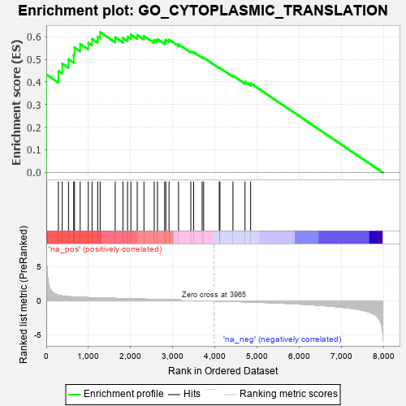
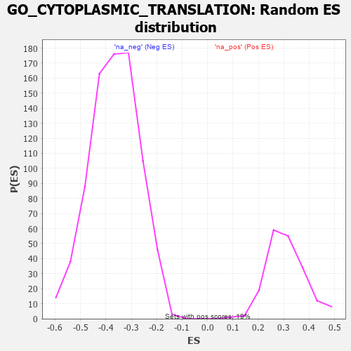

| | | Dataset | 7d |
| Phenotype | NoPhenotypeAvailable |
| Upregulated in class | na_pos |
| GeneSet | GO_CYTOPLASMIC_TRANSLATION |
| Enrichment Score (ES) | 0.61978114 |
| Normalized Enrichment Score (NES) | 1.9937189 |
| Nominal p-value | 0.0 |
| FDR q-value | 0.05724024 |
| FWER p-Value | 0.26 |
Table: GSEA Results Summary

Fig 1: Enrichment plot: GO_CYTOPLASMIC_TRANSLATION
Profile of the Running ES Score & Positions of GeneSet Members on the Rank Ordered List
| PROBE | GENE SYMBOL | GENE_TITLE | RANK IN GENE LIST | RANK METRIC SCORE | RUNNING ES | CORE ENRICHMENT | | 1 | EIF3J | | | 1 | 7.125 | 0.4330 | Yes |
| 2 | DPH3 | | | 287 | 0.844 | 0.4485 | Yes |
| 3 | DPH6 | | | 378 | 0.719 | 0.4808 | Yes |
| 4 | RWDD1 | | | 526 | 0.621 | 0.5000 | Yes |
| 5 | RBM4 | | | 649 | 0.576 | 0.5197 | Yes |
| 6 | DPH1 | | | 669 | 0.570 | 0.5520 | Yes |
| 7 | DPH2 | | | 803 | 0.531 | 0.5675 | Yes |
| 8 | EIF3F | | | 995 | 0.485 | 0.5730 | Yes |
| 9 | DENR | | | 1084 | 0.467 | 0.5903 | Yes |
| 10 | TMA7 | | | 1218 | 0.444 | 0.6005 | Yes |
| 11 | EIF3D | | | 1276 | 0.435 | 0.6198 | Yes |
| 12 | DRG1 | | | 1633 | 0.368 | 0.5973 | No |
| 13 | FMR1 | | | 1816 | 0.334 | 0.5947 | No |
| 14 | EIF3B | | | 1926 | 0.317 | 0.6002 | No |
| 15 | EIF3L | | | 2005 | 0.304 | 0.6089 | No |
| 16 | EIF3G | | | 2155 | 0.284 | 0.6074 | No |
| 17 | EIF3K | | | 2314 | 0.258 | 0.6032 | No |
| 18 | EIF3H | | | 2558 | 0.219 | 0.5858 | No |
| 19 | EIF3E | | | 2634 | 0.207 | 0.5890 | No |
| 20 | EIF3I | | | 2806 | 0.183 | 0.5786 | No |
| 21 | EIF3C | | | 2832 | 0.179 | 0.5863 | No |
| 22 | DPH5 | | | 2909 | 0.164 | 0.5867 | No |
| 23 | EIF3M | | | 3133 | 0.133 | 0.5667 | No |
| 24 | DRG2 | | | 3425 | 0.087 | 0.5353 | No |
| 25 | UNK | | | 3491 | 0.079 | 0.5319 | No |
| 26 | DHX9 | | | 3693 | 0.044 | 0.5092 | No |
| 27 | CNBP | | | 3728 | 0.037 | 0.5072 | No |
| 28 | DPH7 | | | 4100 | -0.024 | 0.4619 | No |
| 29 | MTOR | | | 4114 | -0.025 | 0.4618 | No |
| 30 | EIF2D | | | 4423 | -0.081 | 0.4279 | No |
| 31 | CPEB2 | | | 4709 | -0.141 | 0.4006 | No |
| 32 | EIF3A | | | 4842 | -0.167 | 0.3941 | No |
Table: GSEA details [plain text format]

Fig 2: GO_CYTOPLASMIC_TRANSLATION: Random ES distribution
Gene set null distribution of ES for GO_CYTOPLASMIC_TRANSLATION